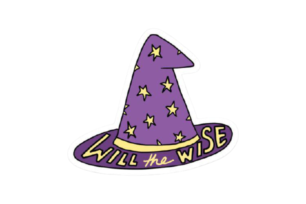
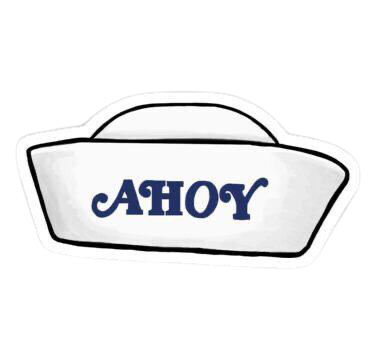
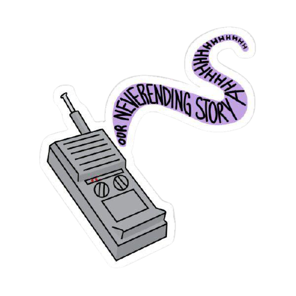

Uma das séries de maior sucesso da Netflix, Stranger Things, incorpora muitos elementos da cultura pop para construir seu mundo de ficção científica, mas um dos pontos centrais da série foi herdado da vida real, mais especificamente do Projeto MKUltra, isso ja diz muito para quem é fã e procura saber de cada detalhe dessa realidade tão amada.
O elenco principal inclui: Millie Bobby Brown, Finn Wolfhard, Noah Schnapp, Gaten Matarazzo, Caleb McLAaughlin, Sadie Sink, Natalia Dyer,David Harbour, Joe Keery, Charlie Heaton, Winona Ryder, Maya Hawke, Dacre Montgomery, Cara Buono e Pria Ferguson.
A série é de origem americana, sua classificação é para maiores de 16 anos, foi lançada em 2016 a sua primeira temporada e hoje ja se contam com 3 em cartazes da Netflix, a quarta já está sendo gravada e logo logo teremos mais informações oficiais.

Segundo Netflix:Em 6 de Novembro, 1983 na pequena cidade de Hawkins, Indiana, o garoto de 12 anos, Will Byers desaparece misteriosamente. A mãe de Will, Joyce, torna-se frenética e tenta encontrar Will enquanto o chefe de polícia Jim Hopper começa a investigar, e assim fazem também os amigos de Will: Dustin, Mike e Lucas. No dia seguinte, uma menina psicocinética que sabe o paradeiro de Will é encontrada pelos meninos. À medida que eles descobrem a verdade, uma sinistra agência do governo tenta encobri-los, enquanto uma força mais insidiosa espreita logo abaixo da superfície.

Segundo a Netflix: Um ano após a volta de Will tudo parece ter voltado ao nomral... mas a escuridão espreita sob a superfície, ameaçando toda a cidade de Hawkins.

Segundo a Netflix e Heroic Hollywood:“A trama se passa no ano de 1985 em Hawkins, Indiana, e o verão está esquentando. A escola está de férias, há um novo shopping na cidade e o grupo de amigos de Hawkins está à beira da idade adulta. O romance floresce e complica a dinâmica do grupo, e eles terão que descobrir como crescer sem se distanciar. Enquanto isso, o perigo se aproxima. Quando a cidade é ameaçada por inimigos antigos e novos, Onze e seus amigos são lembrados de que o mal nunca acaba; evolui. Agora eles vão ter que se unir para sobreviver, e lembrar-se de que a amizade é sempre mais forte que o medo”.

No meu agente conversacional você pode achar algumas respostas para as suas curiosidades sobre a vida de Noah Schnapp, basta perguntar o que você queira saber, como:
Para os atrasados ou interesados em recaptular a série aqui está o link com o resumo da primeira, segnda e terceira temporada da série

Para assistir Stranger Things acesse:
Netflix